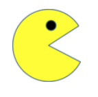
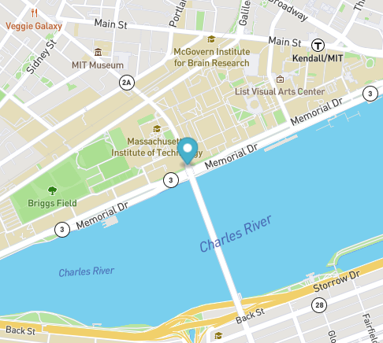

PacMen Exercise
A JavaScript factory pattern example that adds pacmen and moves them within the browser window.
Eye Exercise
A CSS eyes example that highlights the best ways to organize your CSS, HTML, and JavaScript files.

Real Time Bus Tracker
Asynchronous Code example that leverages a map API to plot bus stops between MIT and Harvard.